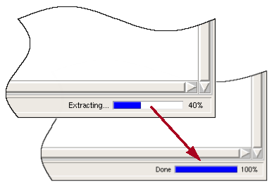

In this procedure
you invoke Calibre LogView and view the contents of a log file.
Procedure
- Invoke Calibre LogView using either of the following
methods. Refer to the calibrelogview reference page for more information
on the command line syntax.
Enter the following command
to invoke Calibre LogView and open a log file:
calibrelogview -log <logfile_name>
Enter the following command
to invoke Calibre LogView without opening a log file:
calibrelogview
This displays the Calibre LogView
window and the Summary tab by default.
- If you invoke Calibre LogView
without specifying the -log argument:
- Select to display the Open Log File
dialog box.
- Navigate to and select the
log file.
- Click Open.
- Notice the progress meter
located in the bottom right corner of the Calibre LogView window.
This meter displays the progress of opening the log file. When the
process of loading the log file into the GUI is complete (100%),
the progress meter no longer displays as shown in Figure 1.
Figure 1. Progress
Meter
- Click on each of the tabs
to view the information extracted from the log file.
- Close Calibre LogView by selecting .
Results
You have now invoked
Calibre LogView and viewed the contents of a log file. The contents
of the log file were extracted into a database which is stored in
the same location as the log file and has the suffix logview.sqlite appended
to the log file name. The database can be re-loaded into Calibre
LogView by selecting .